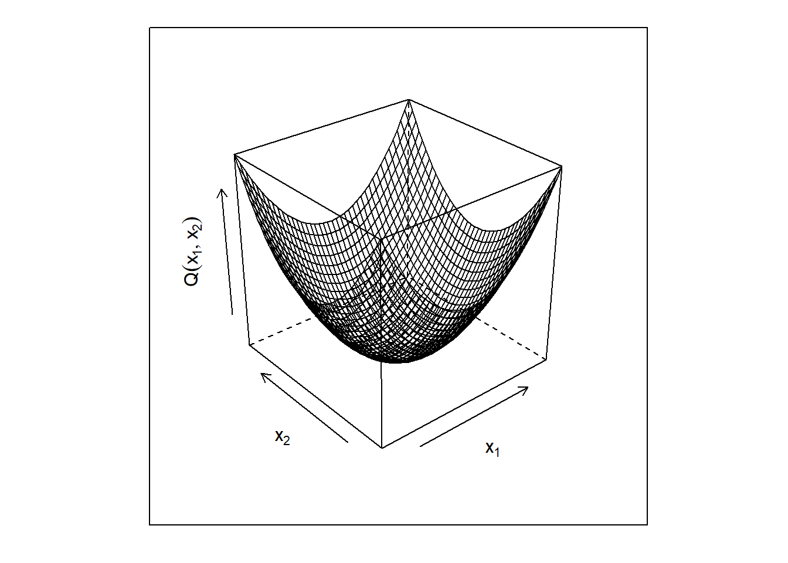
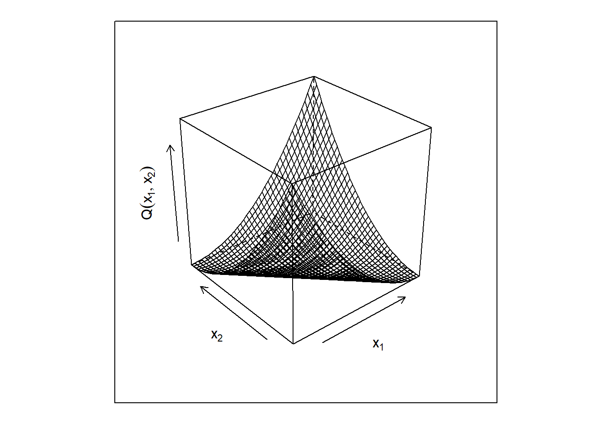
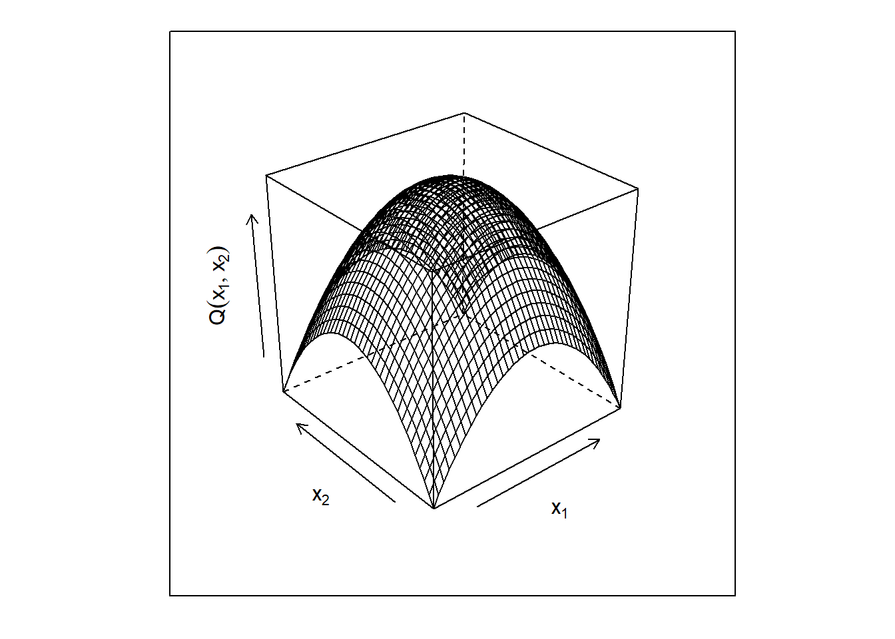
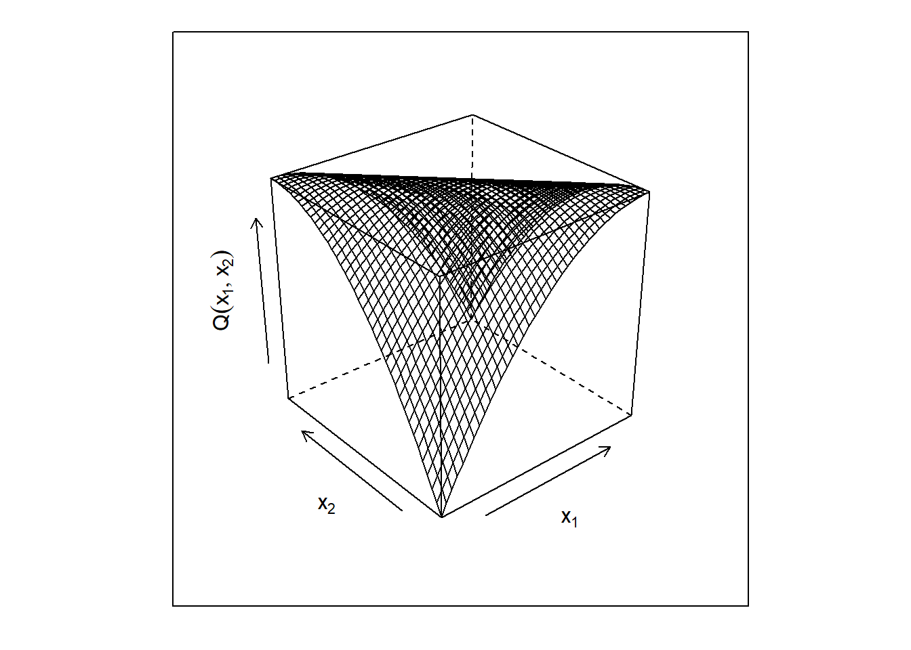
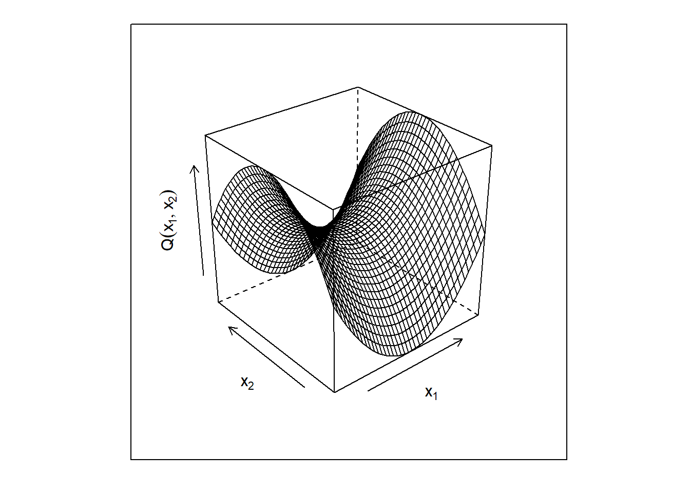
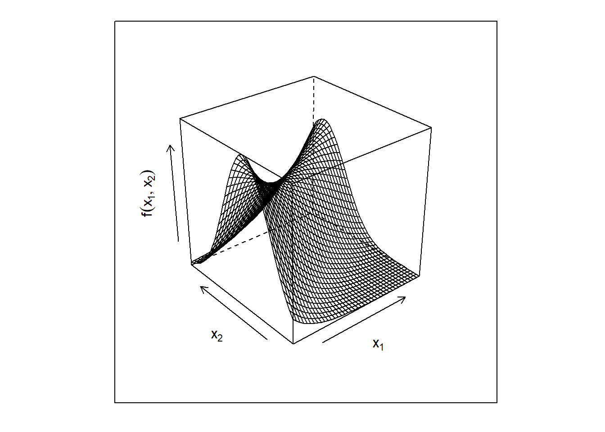
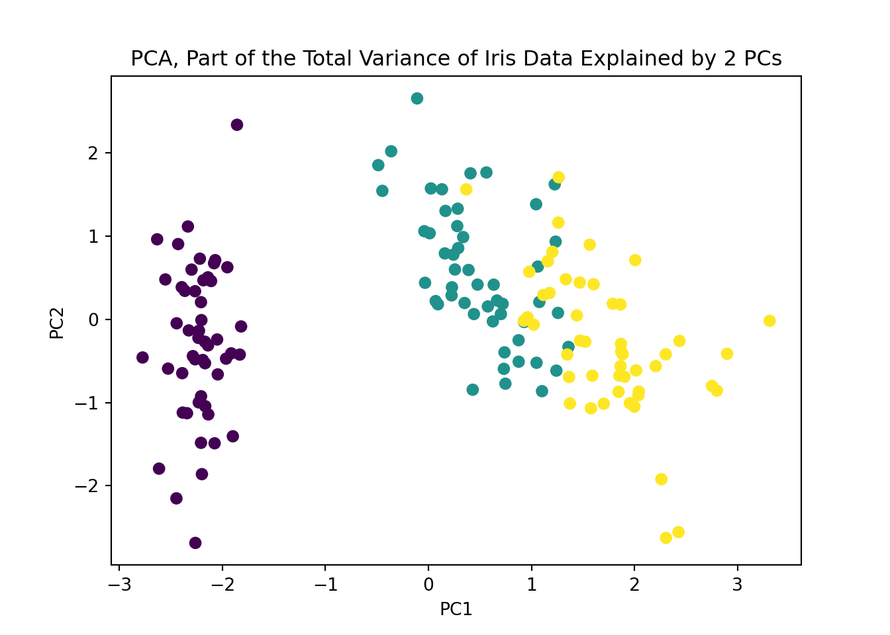

Code
library(tidyverse)
library(mosaic)
library(mvtnorm)the sum of squares, covariance matrix, and correlation matrix
template
Kwangmin Kim
April 2, 2023
Definition 1 (Quadratic Form) For a vector \(\mathbf{x} = [x_1,x_2,\ldots,x_n]^T\), the quadratic form is defined as
\[ Q(\mathbf{x}) = \mathbf{x}^T \mathbf{A} \mathbf{x} \]
where \(\mathbf{A}\) is an \(n \times n\) symmetric matrix.
Here, \(\mathbf{x}^T\) represents the transpose of the vector \(\mathbf{x}\) and \(\mathbf{x}^T \mathbf{A} \mathbf{x}\) represents the dot product of the vector \(\mathbf{x}\) with itself after the transformation by the matrix \(\mathbf{A}\).
The quadratic form can be used to represent a quadratic equation using vectors and matrices. For example, let \(\mathbf{x} = [x_1,x_2]^T\) and \(\mathbf{A}\) be a \(2 \times 2\) symmetric matrix given by:
\[ \mathbf A = \begin{bmatrix} 2&1 \\ 1&3 \end{bmatrix} \]
Then, the quadratic form \(Q(\mathbf{x})\) can be written as:
\[ \begin{align*} \mathbf{Q}(\mathbf{x}) &= \begin{bmatrix} x_1 & x_2 \end{bmatrix} \begin{bmatrix} 2 & 1 \\ 1 & 3 \end{bmatrix} \begin{bmatrix} x_1 \\ x_2 \end{bmatrix} \\ &= \begin{bmatrix} 2x_1 + x_2 & x_1 + 3x_2 \end{bmatrix} \begin{bmatrix} x_1 \\ x_2 \end{bmatrix} \\ &= 2x_1^2 + 2x_1x_2 + 3x_2^2 \end{align*} \]
Here, we can see that the quadratic form can be represented as a polynomial function of degree 2 in the variables \(x_1\) and \(x_2\) with the coefficients given by the entries of the symmetric matrix \(\mathbf{A}\).
Note that the matrix \(\mathbf{A}\) of the quadratic form \(Q(\mathbf{x})\) is not uniuqe if \(\mathbf{A}\) is not symmetric. Different choices of \(\mathbf{A}\) can give rise to the same quadratic form. For example, \(\mathbf B = \begin{bmatrix} 2&1.5 \\ 0.5&3 \end{bmatrix}\) makes the \(\mathbf Q(\mathbf x) = 2x_1^2+2x_1x_2+3x_2^2\)
\[ \mathbf Q(\mathbf x) = \mathbf{x}^T \mathbf{B} \mathbf{x}= \begin{bmatrix} x_1 & x_2 \end{bmatrix} \begin{bmatrix} 2&1.5 \\ 0.5&3 \end{bmatrix} \begin{bmatrix} x_1 \\ x_2 \end{bmatrix}=2x_1^2+2x_1x_2+3x_2^2 \]
There are infinitely many cases that resulting in \(\mathbf Q(\mathbf x) = 2x_1^2+2x_1x_2+3x_2^2\) with any combination of \(b_{12},b_{21}\) such that \(b_{12} + b_{21} =2\).
Another example of \(\mathbf Q(\mathbf x)= \mathbf{x}^T \mathbf{A} \mathbf{x}= 4x_1^2+7x_1x_2+9x_2^2\) gives the possible multiple \(\mathbf{B}\) matrices such as \[ \mathbf{B}_1 = \begin{bmatrix} 4&4 \\ 3&9 \end{bmatrix} \quad \mathbf{B}_2 = \begin{bmatrix} 4&3.5 \\ 3.5&9 \end{bmatrix} \quad \mathbf{B}_3 = \begin{bmatrix} 4&1 \\ 6&9 \end{bmatrix} \quad \mathbf{B}_4 = \begin{bmatrix} 4&2 \\ 5&9 \end{bmatrix} \quad \text{etc} \].
But there are several constraints that can be imposed on \(\mathbf{A}\) to make it unique:
To find the symmetrtic matrix \(\mathbf{A}\) among these candidates, pick one of the candidates matrices and conduct the following operation: \[ \mathbf{A}=\frac{1}{2}(\mathbf{B}_i+\mathbf{B}_i^T) \]
## PDM: positive definite matrix
## PSDM: positive semi-definite matrix
## NDM: negative definite matrix
## NSDM: negative semi-definite matrix
## IDM: indefinte matrix
PDM <-matrix(c(1,0,0,1),2,2)
PSDM <-matrix(c(1,1,1,1),2,2)
NDM <-matrix(c(-1,0,0,-1),2,2)
NSDM <-matrix(c(-1,-1,-1,-1),2,2)
IDM<- matrix(c(1,0,0,-1),2,2)
# positive definite
plot_quadratic_form(x1^2 + x2^2 ~x1&x2)




Eigen value decomposition makes it possible to tell a Positive Definite Matrix from a Positive Semi-Definite Matrix.
Theorem 1 (Spectral Theorem for Symmetric Matrices) A real symmetric matrix is positive definite if and only if all its eigenvalues are positive.
The result of eigen value decomposition are eigen values and eigen vectors. According to the types of the eigen values, we can determine what the matrix is:
If eigen values are all positive and the matrix is positive definite, the matrix is invertible.
eigen() decomposition
$values
[1] 8.605551 1.394449
$vectors
[,1] [,2]
[1,] 0.4718579 -0.8816746
[2,] 0.8816746 0.4718579eigen() decomposition
$values
[1] 1 1
$vectors
[,1] [,2]
[1,] 0 -1
[2,] 1 0eigen() decomposition
$values
[1] 2 0
$vectors
[,1] [,2]
[1,] 0.7071068 -0.7071068
[2,] 0.7071068 0.7071068eigen() decomposition
$values
[1] -1 -1
$vectors
[,1] [,2]
[1,] 1 0
[2,] 0 1eigen() decomposition
$values
[1] 0 -2
$vectors
[,1] [,2]
[1,] -0.7071068 0.7071068
[2,] 0.7071068 0.7071068eigen() decomposition
$values
[1] 1 -1
$vectors
[,1] [,2]
[1,] -1 0
[2,] 0 -1A symmetric matrix \(\mathbf{A}\) is positive definite if and only if the quadratic form \(f(\mathbf{x})=\mathbf{x}^T \mathbf{A} \mathbf{x}\) is positive for all nonzero vectors \(\mathbf{x}\).
To see why this is true, consider the eigenvalue decomposition of \(\mathbf{A}\), which can be written as \(\mathbf{A} = \mathbf{Q} \Lambda \mathbf{Q}^T\), where \(\mathbf{Q}\) is an orthogonal matrix and \(\Lambda\) is a diagonal matrix containing the eigenvalues of \(\mathbf{A}\). Then, for any nonzero vector \(\mathbf{x}\), we have
\[ \begin{aligned} \mathbf x^T \mathbf A \mathbf x&=\mathbf x^T \mathbf Q \mathbf \Lambda \mathbf Q^T \mathbf x \quad (\because \text{diagonalization of } \mathbf A)\\ &=(\mathbf x^T \mathbf Q)\mathbf \Lambda ( \mathbf Q^T\mathbf x)\\ &=\sum_{i=1}^{n} \lambda_iy_i^2 \end{aligned} \]
where \(y_i = (\mathbf{x}^T \mathbf{Q})_i\) is the \(i\) th coordinate (i.e., a scalar value that represents the position of a point or a vector relative to a chosen basis) of \(\mathbf{x}^T \mathbf{A}\) and \(n\) is the dimension of \(\mathbf{x}\) and \(\mathbf{A}\).
Note that since \(\mathbf{Q}\) is orthogonal, we have \(\mathbf{Q}^T \mathbf{Q} = \mathbf{I}\), so \(y_i = \mathbf{q}_i^T \mathbf{x}\), where \(\mathbf{q}_i\) is the \(i\) th column of \(\mathbf{Q}\). Therefore, the quadratic form \(f(\mathbf{x}) = \mathbf{x}^T \mathbf{A} \mathbf{x}\) can be written in terms of the eigenvalues of \(\mathbf{A}\) and the coordinates of \(\mathbf{x}\) with respect to the eigenvectors of \(\mathbf{A}\).
Diagonalization is a process of finding a diagonal matrix \(\mathbf D\) and an invertible matrix \(\mathbf P\) such that \(\mathbf{P}^{-1}\mathbf{A}\mathbf{P} = \mathbf{D}\), where \(\mathbf A\) is a square matrix. In other words, diagonalization is a way of representing a matrix as a diagonal matrix, which is a matrix with non-zero values only on its main diagonal.
Since \(\mathbf{A}\) is positive definite, we have \(\lambda_i > 0\) for all \(i\), and so \(\sum_{i=1}^n \lambda_i y_i^2 > 0\) for all nonzero vectors \(\mathbf{x}\). Therefore, the quadratic form \(f(\mathbf{x})=\mathbf{x}^T \mathbf{A} \mathbf{x}\) is positive for all nonzero vectors \(\mathbf{x}\), which implies that \(\mathbf{A}\) is positive definite.
In other words, the positive definiteness of a symmetric matrix \(\mathbf{A}\) is equivalent to the positivity of the associated quadratic form \(f(\mathbf{x})=\mathbf{x}^T \mathbf{A} \mathbf{x}\) for all nonzero vectors \(\mathbf{x}\).
Therefore, a symmetric matrix, \(\mathbf A\) is said to be positive definite if all of its eigenvalues are positive or equivalently, a symmetric matrix, \(\mathbf A\) is positive definite if left-multiplying and right-multiplying it by the same vector, \(\mathbf x\) always gives a positive number if \(\mathbf x^T \mathbf A \mathbf x\)
A quadratic form can be expressed as a bilinear form. In other words, a quadratic form can be written in terms of a bilinear form by defining a new matrix that is the sum of the matrix representing the quadratic form and its transpose.
Definition 2 (Bilinear Form) Suppose we have a quadratic form defined as \(q(\mathbf{x}) = \mathbf{x}^T \mathbf{A} \mathbf{x}\) where \(\mathbf{A}\) is a symmetric matrix. Then, we can define a bilinear form as:
\[ b(\mathbf{x}, \mathbf{y}) = \frac{1}{2}(\mathbf{x}^T \mathbf{A} \mathbf{y} + \mathbf{y}^T \mathbf{A} \mathbf{x}) \]
Note that the factor of \(\frac{1}{2}\) is introduced to avoid double-counting. It can be shown that the two forms are equivalent, in the sense that for any \(\mathbf{x}\), \(q(\mathbf{x}) = b(\mathbf{x}, \mathbf{x})\).
In other words, every quadratic form can be expressed as a bilinear form, and every symmetric bilinear form can be expressed as a quadratic form.
The sum of squares of a vector \(\mathbf{x} = [x_1, x_2, \ldots, x_n]^T\) can be represented as a quadratic form \(\mathbf{x}^T\mathbf{x}\). To see this, consider the sum of squares:
\[ \sum_{i=1}^{n} x_i^2 = x_1^2 + x_2^2 + \dots +x_n^2 \]
Now, we can write this in vector form as:
\[ \mathbf x^T \mathbf I \mathbf x = \mathbf x^T \mathbf x = \begin{bmatrix} x_1 & x_2 & \dots & x_n \end{bmatrix} \begin{bmatrix} x_1 \\ x_2 \\ \vdots \\ x_n \end{bmatrix} \]
Therefore, the sum of squares can be represented as a quadratic form \(\mathbf{x}^T\mathbf{x}\).
Quadratic form is used in the power part of the pdf of a bivariate normal distribution: \[ f(x_1,x_2)=\frac{1}{2\pi\sigma_{\mathbf{X_1}}\sigma_{\mathbf{X_2}}\sqrt{1-\rho^2}}\operatorname{exp}\left[ -\frac{1}{2(1-\rho^2)}\left(\frac{(x_1-\mu_{X_1})^2}{\sigma_{X_1}}-\frac{2\rho(x_1-\mu_{X_1})(x_1-\mu_{X_1})(x_2-\mu_{X_2})}{\sigma_{X_1}\sigma_{X_2}}+\frac{(x_2-\mu_{X_2})^2}{\sigma_{X_2}}\right) \right] \] where \(\mu_{X_1}, \mu_{X_2}\) are the means of \(X, Y\) respectively, \(\sigma_{X_1}, \sigma_{X_2}\) are the standard deviations of \(X_1,X_2\) respectively, and \(\rho\) is the correlation coefficient \(X_1,X_2\).
The pdf is equivalent with the following matrix form:
\[ f(\mathbf{x})=\frac{1}{(2\pi)^{\frac{n}{2}}|\Sigma|^{\frac{1}{2}}}\operatorname{exp}\left[ -\frac{1}{2}(\mathbf{x}-\mathbf{\mu})^{T}\mathbf{\Sigma}^{-1}(\mathbf{x}-\mathbf{\mu})\right] \]
where \((\mathbf{x}-\mathbf{\mu})^{T}\mathbf{\Sigma}^{-1}(\mathbf{x}-\mathbf{\mu})\) is a quadratic form, \(\mathbf{x}\) is a vector in \(\mathbb{R}^n\), \(\mathbf{\mu}\) is a mean vector in \(\mathbb{R}^n\), and \(\mathbf{\Sigma}\) is a covariance matrix.
\[ \mathbf{x}= \begin{bmatrix}x_1 \\ x_2\end{bmatrix} \quad \mathbf{\mu}=\begin{bmatrix}\mu_{x_1} \\ \mu_{x_2}\end{bmatrix} \quad \mathbf{\Sigma}=\begin{bmatrix} \sigma_{X_1}^2 & \rho\sigma_{X_1}\sigma_{X_2}\\ \rho\sigma_{X_1}\sigma_{X_2} & \sigma_{X_2} \end{bmatrix} \].
The quadratic form \(\mathbf{\sigma}\) informs us of how data are distributed with means \(\mathbf{\mu}\) and the covariance matrix \(\mathbf{\Sigma}\).
Exmaple1 \(2x_1^2+4x_2^2\) can be represented as a quadratic form \(\begin{bmatrix}x_1 & x_2\end{bmatrix}\begin{bmatrix}2&0 \\0&4\end{bmatrix}\begin{bmatrix}x_1 \\ x_2\end{bmatrix}\). The matrix \(\mathbf{A}\) part is \(\begin{bmatrix}2&0 \\0&4\end{bmatrix}\) and its inverse is \(\begin{bmatrix}2^{-1}&0 \\0&4^{-1}\end{bmatrix}\). Here, since the off diagonal entries are zeros, \(X_1\) and \(X_2\) are independent. Then, the pdf is:
\[ f(x_1,x_2)=\frac{1}{2\pi\sigma_{\mathbf{X_1}}\sigma_{\mathbf{X_2}}}\operatorname{exp}\left[ -\frac{1}{2}\left(\frac{(x_1-\mu_{X_1})^2}{\sigma_{X_1}}+\frac{(x_2-\mu_{X_2})^2}{\sigma_{X_2}}\right) \right] \]
The inverse of a diagonal matrix is the inverse of each entry
Exmaple2 \(9x_1^2+6x_1x_2+4x_2^2\)
[1] 0.02592721This value is the same as \(f(\mathbf{x})=\frac{1}{(2\pi)^{\frac{n}{2}}|\Sigma|^{\frac{1}{2}}}\operatorname{exp}\left[ -\frac{1}{2}(\mathbf{x}-\mathbf{\mu})^{T}\mathbf{\Sigma}^{-1}(\mathbf{x}-\mathbf{\mu})\right]=\) 0.0259272
plotFun(1/(2*pi*sigma1*sigma2*sqrt(1-rho^2))*exp(-1/(2*(1-rho^2))*((x1-mu1)^2/sigma1^2+(x2-mu2)^2-2*rho*(x1-mu1)*(x2-mu2))/(sigma1*sigma2))~x1 & x2,
mu1=1,
mu2=2,
sigma1=3,
sigma2=2,
rho=0.5,
x1.lim=range(-5,5),
x2.lim=range(-5,5),
surface=TRUE,
xlab=expression(x[1]),
ylab=expression(x[2]),
zlab=expression(f(x[1],x[2])))
Objective Functions, Constraints, or Penalty Terms
Ridge Regression
SVM
Modeling risk and return in portfolio optimization and asset pricing models
quadratic sieve algorithm for integer factorization
The covariance matrix of a random vector \(\mathbf{x}\) can be represented as a quadratic form in terms of the vector \(\mathbf{x}\) and the matrix \(\mathbf{C}\) as follows:
\[ \mathbf x^T \mathbf C \mathbf x \]
where \(\mathbf{C}\) is the covariance matrix. This expression is a quadratic form because it involves a quadratic polynomial in the elements of \(\mathbf{x}\).
In this representation, the diagonal elements of \(\mathbf{C}\) correspond to the variances of the individual components of \(\mathbf{x}\), and the off-diagonal elements correspond to the covariances between the components. The expression \(\mathbf{x}^T \mathbf{C} \mathbf{x}\) measures the variability of the random vector \(\mathbf{x}\) in all possible directions, weighted by the covariances between the components.
The covariance matrix \(\mathbf{C}\) measures the covariance between each pair of components of the random vector \(\mathbf{x}\). It is a matrix that summarizes the pairwise covariances between the components of \(\mathbf{x}\).
On the other hand, the quadratic form \(\mathbf{x}^T \mathbf{C} \mathbf{x}\) measures the total variability of \(\mathbf{x}\), taking into account the covariances between all possible pairs of components.
It does this by weighting the contribution of each component to the overall variability by its covariance with every other component. So, while the covariance matrix \(\mathbf{C}\) captures the pairwise covariances between the components of \(\mathbf{x}\), the quadratic form \(\mathbf{x}^T \mathbf{C} \mathbf{x}\) captures the total variability of \(\mathbf{x}\) in all directions.
Let’s take a simple example with a 2-dimensional random vector \(\mathbf{x}=[x_1, x_2]^T\). We can think of this random vector as representing data points in a 2D space. The covariance matrix \(\mathbf{C}\) will capture the covariances between \(x_1\) and \(x_2\). Let’s say that the covariance matrix is given by:
\[ \mathbf C =\begin{bmatrix} \sigma_{x_1} & \operatorname{Cov}(x_1,x_2) \\ \operatorname{Cov}(x_2,x_1) & \sigma_{x_2} \end{bmatrix} \]
where \(\sigma_{x_1}^2\) and \(\sigma_{x_2}^2\) are the variances of \(x_1\) and \(x_2\), respectively, and \(\text{Cov}(x_1,x_2)\) is their covariance.
Now, let’s consider the quadratic form \(\mathbf{x}^T \mathbf{C} \mathbf{x}\). This expression gives us a scalar value that measures the variability of the random vector \(\mathbf{x}\) in all possible directions, weighted by the covariances between the components. We can see this geometrically by plotting the data points in the 2D space and drawing an ellipse that captures the variability of the data. The shape of the ellipse is determined by the eigenvalues and eigenvectors of the covariance matrix \(\mathbf{C}\).
To see this, let’s first rewrite the quadratic form as: \[ \mathbf x^T \mathbf C \mathbf x = \sigma_{x_1}^2x_1^2 +2\operatorname{Cov}(x_1,x_2)x_1x_2+\sigma_{x_2}^2 \]
This is a quadratic equation in \(x_1\) and \(x_2\) and can be thought of as the equation of an ellipse centered at the origin by the determinant of the conic equation. The shape of the ellipse is determined by the coefficients of the quadratic terms, which are the variances and covariances in the covariance matrix \(\mathbf{C}\).
Now, let’s find the eigenvectors and eigenvalues of the covariance matrix \(\mathbf{C}\). The eigenvectors are the directions along which the data has the most variance, and the corresponding eigenvalues are the variances of the data along those directions.
Let’s assume that the eigenvalues of \(\mathbf{C}\) are ordered such that \(\lambda_1 \geq \lambda_2\). Then, the eigenvectors \(\mathbf{v}_1\) and \(\mathbf{v}_2\) satisfy:
\[ \mathbf C \mathbf v_1 =\lambda_1\mathbf v_1 \text{ } \mathbf C \mathbf v_2 =\lambda_2\mathbf v_2 \]
These equations can be rewritten as:
\[ \begin{equation} \begin{bmatrix} \sigma_{x_1}^2 & \text{Cov}(x_1,x_2)\\ \text{Cov}(x_1,x_2) & \sigma_{x_2}^2 \end{bmatrix} \begin{bmatrix} v_{11}\\ v_{21} \end{bmatrix} = \lambda_1 \begin{bmatrix} v_{11}\\ v_{21} \end{bmatrix} \end{equation} \]
This equation can be expanded as:
\(\sigma_{x_1}^2 v_{11} + \text{Cov}(x_1,x_2) v_{21} = \lambda_1 v_{11}\)
\(\text{Cov}(x_1,x_2) v_{11} + \sigma_{x_2}^2 v_{21} = \lambda_1 v_{21}\)
Now, let’s multiply the first equation by \(v_{11}\) and the second equation by \(v_{21}\), and then subtract the second equation from the first:
\((\sigma_{x_1}^2 - \lambda_1)v_{11}v_{21} + \text{Cov}(x_1,x_2)(v_{21}^2 - v_{11}^2) = 0\)
This can be rewritten as:
\(\frac{v_{21}}{v_{11}} = \frac{\sigma_{x_1}^2 - \lambda_1}{\text{Cov}(x_1,x_2)} - \frac{v_{11}}{v_{21}}\)
Let \(t = \frac{v_{21}}{v_{11}}\). Then, we have:
\(t^2 - \left(\frac{\sigma_{x_1}^2 + \sigma_{x_2}^2}{\text{Cov}(x_1,x_2)}\right)t + \frac{\lambda_1}{\text{Cov}(x_1,x_2)} = 0\)
This is a quadratic equation in \(t\), and its roots can be solved using the quadratic formula. The roots are:
\(t_1 = \frac{\sigma_{x_1}^2 - \sigma_{x_2}^2 + \sqrt{(\sigma_{x_1}^2 - \sigma_{x_2}^2)^2 + 4\text{Cov}(x_1,x_2)^2}}{2\text{Cov}(x_1,x_2)}\)
\(t_2 = \frac{\sigma_{x_1}^2 - \sigma_{x_2}^2 - \sqrt{(\sigma_{x_1}^2 - \sigma_{x_2}^2)^2 + 4\text{Cov}(x_1,x_2)^2}}{2\text{Cov}(x_1,x_2)}\)
Finally, the eigenvectors \(\mathbf{v}_1\) and \(\mathbf{v}_2\) are given by:
\[ \mathbf{v}_1 = \begin{bmatrix}1 \\ t_1 \end{bmatrix} \text{ } \mathbf{v}_2 = \begin{bmatrix} 1 \\ t_2 \end{bmatrix} \]
These eigenvectors define the principal components of the data, which are the orthogonal directions in the feature space along which the data varies the most.
Let’s apply this difference between \(\mathbf C= \operatorname{Cov(\mathbf X)}\) and \(\mathbf x^T \mathbf{C} \mathbf x\) or PCA to Iris dataset:
import numpy as np
import matplotlib.pyplot as plt
from sklearn.datasets import load_iris
from sklearn.preprocessing import StandardScaler
# Load the iris dataset
iris = load_iris()
X = iris.data
# Standardize the data
scaler = StandardScaler()
X_std = scaler.fit_transform(X)
# Calculate the covariance matrix
cov_matrix = np.cov(X_std.T)
print(f'C=Cov(X) =\n{cov_matrix}')
# Calculate the eigenvalues and eigenvectors of the covariance matrixC=Cov(X) =
[[ 1.00671141 -0.11835884 0.87760447 0.82343066]
[-0.11835884 1.00671141 -0.43131554 -0.36858315]
[ 0.87760447 -0.43131554 1.00671141 0.96932762]
[ 0.82343066 -0.36858315 0.96932762 1.00671141]]eigenvalues, eigenvectors = np.linalg.eig(cov_matrix)
# Sort the eigenvalues in descending order
sorted_indexes = eigenvalues.argsort()[::-1]
sorted_eigenvalues = eigenvalues[sorted_indexes]
sorted_eigenvectors = eigenvectors[:, sorted_indexes]
# Project the data onto the principal components
transformed_data = X_std.dot(sorted_eigenvectors)
# Visualize the PCA
fig, ax = plt.subplots()
ax.scatter(transformed_data[:, 0], transformed_data[:, 1], c=iris.target)
ax.set_xlabel('PC1')
ax.set_ylabel('PC2')
ax.set_title('PCA, Part of the Total Variance of Iris Data Explained by 2 PCs')
plt.show()
This representation is useful in many statistical and machine learning applications, where the covariance matrix provides information about the variability and dependencies between different features or variables. For example, in principal component analysis (PCA), the covariance matrix is used to identify the directions of maximum variability in a dataset, which can be used to reduce the dimensionality of the data while retaining as much information as possible.
The principal components of a dataset can be obtained by finding the eigenvectors of the covariance matrix. In other words, we can express the covariance matrix as a quadratic form:
\[ \mathbf C = \mathbf x^T \mathbf A \mathbf x \]
where \(\mathbf{x}\) is a column vector of centered data, and \(\mathbf{A}\) is a symmetric positive semi-definite matrix (the covariance matrix). Diagonalizing \(\mathbf{A}\) gives us the eigenvalues and eigenvectors, which are used to transform the original data into a new coordinate system, where the first axis (the first principal component) corresponds to the direction of greatest variance, the second axis (the second principal component) corresponds to the direction of second greatest variance, and so on. This new coordinate system is called the principal component space.
In summary, PCA can be seen as a method for finding the principal components of a dataset by diagonalizing the covariance matrix, which can be expressed as a quadratic form.